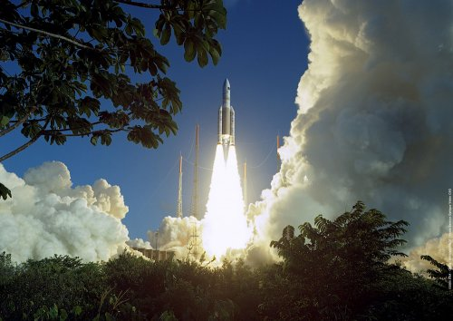

Accueil > Introduction
Introduction
- 
- Départ d’Ariane 5 à Kourou, le 12 février 2005
- ©2005 ESA - CNES - Arianespace / Photo Service Optique Vidéo CSG
Bienvenue sur ce TPE qui a été réalisé par trois élèves du lycée Saint-François d’Assise : Arthur Amorim, Alexandre Iooss et Arthur Josien-Gontier.
Nous sommes tous les trois des étudiants en première dans la filière générale S SI. Ainsi nous avons choisi Avancées scientifiques et Réalisations techniques parmi les quatre thèmes proposés afin de nous concentrer dans notre production sur les Sciences de l’Ingénieur ainsi que sur les Sciences Physiques.
Nous avons choisi de travailler ensemble par affinité et dans le cadre de nos recherches, nous nous sommes alors très rapidement intéressés à l’espace et plus particulièrement à son importance pour l’Homme. L’aérospatial est un sujet qui nous passionne tous les trois depuis longtemps et nous souhaitions mettre à profit nos connaissances et en acquérir de nouvelles. Nous étions d’ailleurs complémentaires sur plusieurs aspects du sujet. Ce choix nous a permis de développer certains points en relation avec nos matières.
Problématique
« La Terre est le berceau de l’humanité mais nul ne peut éternellement rester dans son berceau. » disait Constantin Tsiolkovski (1857-1935), le père de l’astronautique moderne. Et pourtant aujourd’hui encore l’Homme ne peut aller déambuler librement dans l’espace. De plus malgré l’instinct qui nous pousse à nous échapper de notre planète, l’être humain ne profite de ses technologies que pour servir d’autres intérêts. Alors que nous recherchions et réfléchissions ensemble, de nombreuses questions se posaient, notamment, qu’est-ce qui pousse l’Homme à explorer l’espace si ce n’est sa nature, mais nous débattions aussi pour savoir si tout être humain pourrait réellement bientôt aller dans l’espace. C’est en pensant à ces questions que notre problématique est née :
Avons-nous intérêt à aller dans l’espace et avons-nous les moyens de nous y rendre ?
Nous avons choisi de présenter ce TPE sous la forme d’un site internet tout en gardant une structure organisée. Le format de site nous permet d’utiliser du contenu interactif comme des animations ou des vidéos extraites d’autres sites internet. Il nous permet aussi de travailler à plusieurs à distance sur notre projet.
Ce site a été optimisé pour Mozilla Firefox et Google Chrome, bien qu’il s’affiche correctement avec Internet Explorer 8. Nous vous recommandons donc d’utiliser ces navigateurs.